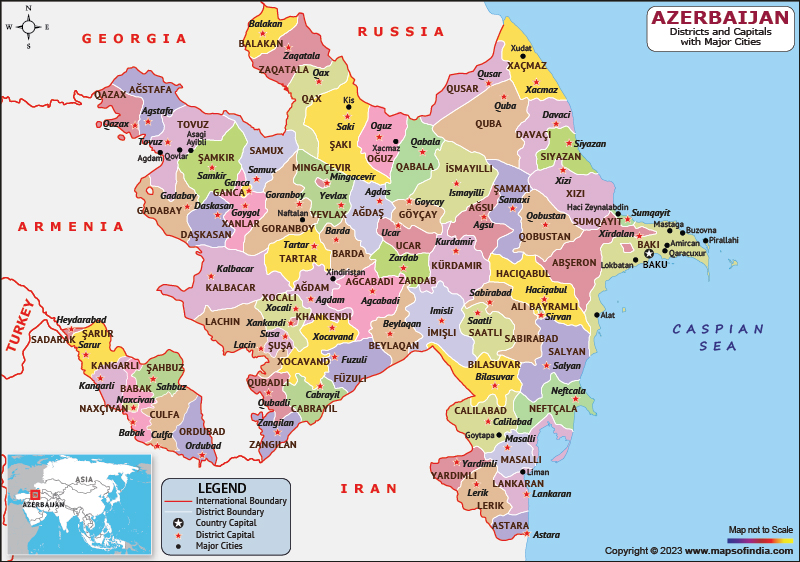

Azerbaijan ,officially the Republic of Azerbaijan ,is a transcontinental
and landlocked country at the boundary of Western Asia and Eastern
Europe. It is a part of the South Caucasus region and is bounded by the
Caspian Sea to the east, Russia's republic of Dagestan to the north,
Georgia to the northwest, Armenia and Turkey to the west, and Iran to
the south. Baku is the capital and largest city.
The territory of what
is now Azerbaijan was ruled first by Caucasian Albania and later by
various Persian empires. Until the 19th century, it remained part of
Qajar Iran, but the Russo-Persian wars of 1804–1813 and 1826–1828 forced
the Qajar Empire to cede its Caucasian territories to the Russian
Empire; the treaties of Gulistan in 1813 and Turkmenchay in 1828 defined
the border between Russia and Iran.The region north of the Aras was part
of Iran until it was conquered by Russia in the 19th century, where it
was administered as part of the Caucasus Viceroyalty. By the late 19th
century, an Azerbaijan national identity emerged, and the Azerbaijan
Democratic Republic proclaimed its independence from the Transcaucasian
Democratic Federative Republic in 1918, a year after the Russian Empire
collapsed, and became the first secular democratic Muslim-majority
In 1920, the country was conquered and incorporated into the
Soviet Union as the Azerbaijan SSR. The modern Republic of Azerbaijan
proclaimed its independence on 30 August 1991, shortly before the
dissolution of the Soviet Union. In September 1991, the ethnic Armenian
majority of the Nagorno-Karabakh region formed the self-proclaimed
Republic of Artsakh, which became de facto independent with the end of
the First Nagorno-Karabakh War in 1994, although the region and seven
surrounding districts remained internationally recognized as part of
Azerbaijan.
Following the Second Nagorno-Karabakh War in 2020, the seven
districts and parts of Nagorno-Karabakh were returned to Azerbaijani
control. An Azerbaijani offensive in 2023 ended the Republic of Artsakh
and resulted in the expulsion of Nagorno-Karabakh Armenians.Azerbaijan
is a unitary semi-presidential republic. It is one of six independent
Turkic states and an active member of the Organization of Turkic States
and the TÜRKSOY community. Azerbaijan has diplomatic relations with 182
countries and holds membership in 38 international organizations,
including the United Nations, the Council of Europe, the Non-Aligned
Movement, the Organization for Security and Co-operation in Europe
(OSCE), and the NATO PfP program. It is one of the founding members of
GUAM, the Commonwealth of Independent States,[25] and the OPCW.
Azerbaijan is an observer state of the World Trade Organization. The
vast majority of the country's population (97%) is Muslim. The
Constitution of Azerbaijan does not declare an official religion, and
all major political forces in the country are secular. Azerbaijan is a
developing country and ranks 81st on the Human Development Index. The
ruling New Azerbaijan Party, in power since 1993, has been accused of
authoritarianism under presidents Heydar Aliyev and his son Ilham
Aliyev. The ruling Aliyev family has been criticized on Azerbaijan's
human rights record, including media restrictions and repression of its
Shia Muslim population.
The Azerbaijani flag has 3 colors.
Blue-represents the Turkic heritage of the Azerbaijani people.
Red-symbolizes progress, modernization, and development.
Green-stands for Islam, the main religion in Azerbaijan.
